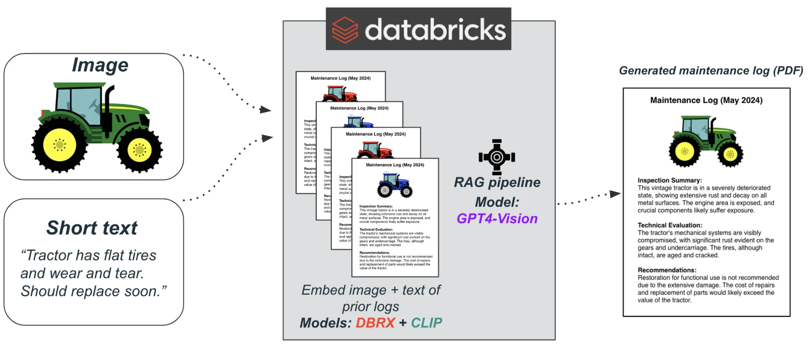
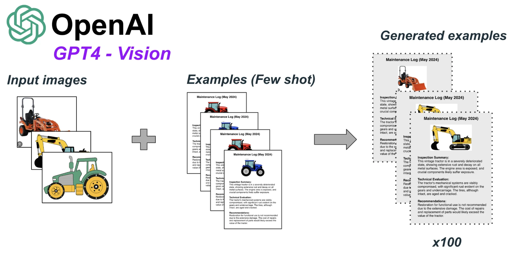
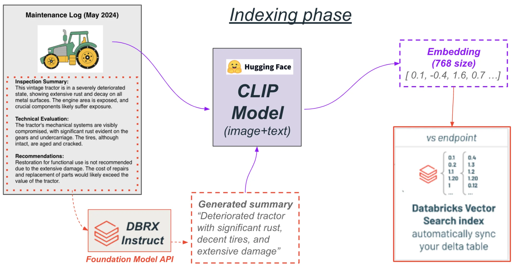
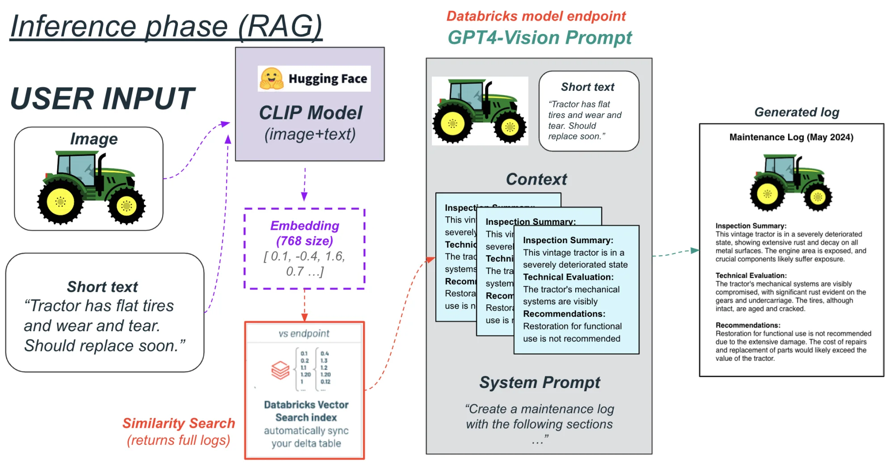

Overview
LogCraft is a multi-modal Retrieval Augmented Generation app built on the Databricks platform to help field service engineers from manufacturing companies write detailed maintenance logs quickly and efficiently.

Why we built LogCraft
Problem: One of the most tedious parts of the manufacturing industry is for field service engineers to physically inspect equipment on a periodic basis for repairs and defects. For each inspection they’re required to write long, detailed maintenance logs that include photos of the equipment, an evaluation of its current state, and recommendations. This process is (1) time consuming, (2) inefficient as it doesn’t use prior logs’ data, and (3) non-standardized since each engineer writes logs in a different format.
Solution: LogCraft helps solve these problems with AI, built on Databricks. A field service engineer simply has to upload a photo of the equipment and provide quick, rough notes. LogCraft uses multi-modal RAG (images + text retrieval) to find prior logs that are most similar to the image + notes combination from the engineer. Then all of this information plus context is given to GPT4-Vision to generate a final, detailed log that the engineer can download as a PDF.
How it works (technical overview)
We used a combination of Databricks, HuggingFace, and OpenAI to build LogCraft. We used multiple features of Databricks: Delta Tables, Notebooks, and Vector Search Indices. We also used the Foundational Model API and Model Serving endpoints features of Databricks.
Step 1: Creating the Dataset
First, we needed a seed dataset of maintenance logs and images. We found a few examples of these logs online but we needed a lot more so we used the GPT4-Vision model from OpenAI to generate a synthetic dataset.

We fed it input images of equipment and gave it a few real maintenance logs for few-shot examples, and then asked it to generate a hundred full logs based on that information. These logs and images were imported into our Databricks workspace.
Step 2: Indexing (embedding and storage of vectors)
Now that we had our dataset, we moved onto indexing and storing embeddings in our vector database. The flow below is what we did for a single example, which we repeated for the entire dataset.

Steps for the indexing phase:
- Use DBRX Instruct to create log summaries: First, we took the text of the log and used the DBRX Instruct model with the Foundational Model API to summarize this text into a short paragraph for use downstream.
- Use CLIP model to create multimodal embeddings: Then, we ran both this summary and the image from the log through the CLIP model from HuggingFace. CLIP is a multi-modal model that associates images with their text description and is commonly used for combined image+text retrieval. We extract the last hidden layer of the model, which represents an embedding of size 768 that captures the semantic meaning of both the image and text combined. The model can only take text up to 77 tokens of text, which is why we needed to use the DBRX model to summarize the log first.
- Store embedding in Delta Table: Finally we stored this embedding along with the full maintenance log in a Delta Table within Databricks. We built a vector search endpoint and vector index on top of this table that will always keep it in sync with new data.
Step 3: Inference phase (multi-modal RAG)
Now let’s walk through what happens during inference when a user actually uses our deployed app.

Steps for the inference phase:
- User uploads an image and their notes: First, the user uploads a photo of the equipment and some short notes through our web app interface.
- Use CLIP model to create embeddings: Then, we use the same CLIP model as before to create an embedding representing the combination of that image and the notes.
- Retrieve similar maintenance logs: We run a vector similarity search on that embedding with our vector search in Databricks to retrieve the full maintenance logs’ text of prior logs that are most similar to the information from the user.
- Create prompt for GPT4-Vision: Then we create a detailed prompt that we send to OpenAI’s GPT4-Vision model using Databricks’ model endpoints. This prompt includes the original image and notes from the user, the full text of retrieved prior logs from the vector search (as context), and detailed instructions on how to create a new maintenance log using all of that information.
- Generate maintenance log and display to user: We send this to OpenAI’s GPT4-Vision through Databrick’s model endpoint, which generates a new, full, high-quality maintenance log.
- Create PDF of maintenance log for user: Finally, We use a Python library to create a PDF that includes the image and generated log.
The best part is that this entire pipeline from indexing to inference is hyper-scalable using Databricks so our app will get better over time without any new code needing to be written.
What’s next for LogCraft?
Through building LogCraft for the Databricks hackathon, we realized that there are multiple high-impact downstream use cases for LogCraft:
- Continuous monitoring with IoT: We can integrate this with IoT devices within the manufacturing plants themselves. These devices can provide a photo and generated text from computer vision to LogCraft to auto-generate logs daily.
- Predictive maintenance algorithms: LogCraft can also be used to augment predictive maintenance algorithms so manufacturing companies can address any potential issues BEFORE they happen.
- Autonomous field service robots: In the long term, apps like LogCraft can help develop fully autonomous field service robots to perform their own inspections and maintenance out on the field. So in addition to generating logs, these robots can actually address the issues in real-time.
We had a blast building LogCraft on Databricks and see multiple potential future uses of the technology as it scales.